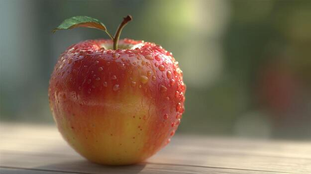
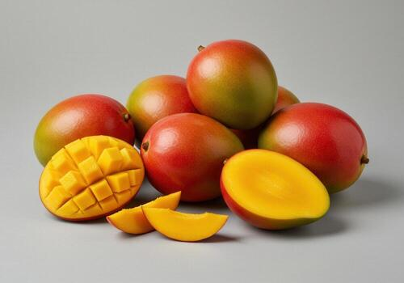
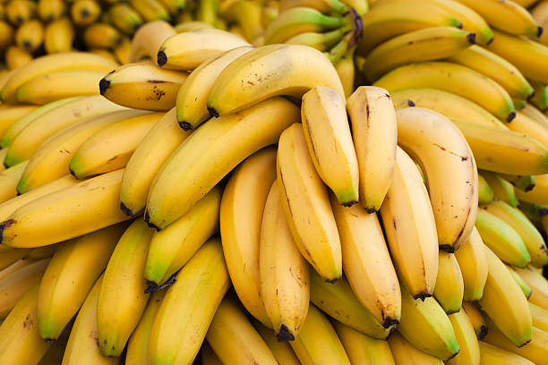

ESSENTIAL GUIDE TO COMMON FRUITS AND THEIR HEALTH BENEFITS
A Nutritional & Dietary Reference
Exploring the vitamins, minerals, and wellness advantages of everyday fruits
Table of Contents
- Overview: Why Eat Fresh Fruit?
- Apple (Malus domestica)
- Orange (Citrus sinensis)
- Mango (Mangifera indica)
- Banana (Musa)
- Daily Intake & Selection Tips
1. Overview: Why Eat Fresh Fruit?
Fresh fruits are nutrient-dense sources of dietary fiber, vitamins, minerals, and protective antioxidants. Regularly including a variety of fruits in your daily diet supports cardiovascular health, improves digestion, strengthens immune defenses, and helps manage weight naturally.
2. Featured Fruit Profiles
Apple — "The Fiber Powerhouse"

Botanical Name: Malus domestica
Flavor Profile: Crisp, sweet, and mildly tart
Key Nutrients: Dietary Fiber (Pectin), Vitamin C, Potassium, Quercetin
Health Benefits:
- Gut Health: Contains soluble pectin fiber, which acts as a prebiotic to nourish healthy gut bacteria.
- Heart Health: Linked to lower levels of LDL ("bad") cholesterol and improved arterial health.
- Blood Sugar Balance: Has a low glycemic index and provides steady, slow-burning energy.
[Back to Top]
Orange — "The Citrus Shield"
Botanical Name: Citrus sinensis
Flavor Profile: Juicy, sweet, and tangy
Key Nutrients: Vitamin C, Folate (Vitamin B9), Thiamine, Bioflavonoids
Health Benefits:
- Immune Support: One medium orange supplies over 70% of the daily recommended intake of Vitamin C.
- Collagen Formation: Vitamin C is vital for collagen production, aiding skin elasticity and wound repair.
- Hydration: Made up of roughly 86% water, helping keep cells hydrated alongside natural electrolytes.
[Back to Top]
Mango — "The King of Fruits"

Botanical Name: Mangifera indica
Flavor Profile: Rich, creamy, sweet, and tropical
Key Nutrients: Vitamin A (Beta-Carotene), Vitamin C, Mangiferin, Copper
Health Benefits:
- Vision Support: Packed with beta-carotene, lutein, and zeaxanthin to protect retina health.
- Aids Digestion: Contains digestive enzymes known as amylases that break down complex carbohydrates.
- Cellular Protection: Rich in mangiferin, a powerful plant antioxidant that fights oxidative stress.
[Back to Top]
Banana — "The Natural Energy Booster"

Botanical Name: Musa acuminata
Flavor Profile: Sweet, soft, and mellow
Key Nutrients: Potassium, Vitamin B6, Magnesium, Resistant Starch
Health Benefits:
- Sustained Energy: Provides an ideal combination of natural sugars and complex carbs for workouts.
- Blood Pressure Regulation: Rich in potassium and low in sodium, helping maintain healthy blood pressure.
- Nervous System Health: Vitamin B6 plays a critical role in nervous system function and serotonin production.
[Back to Top]
3. Daily Intake & Selection Tips
- Prioritize Whole Fruits: Choose whole fruit over juices to keep the fiber intact and prevent rapid blood sugar spikes.
- Aim for Variety: Eating fruits of different colors guarantees a wider range of protective phytochemicals.
- Wash Before Peeling: Always clean fruit skins under cool running water to eliminate surface dust and residues.
- Store Smart: Keep apples and oranges chilled to maintain freshness, while letting bananas and mangoes ripen at room temperature.
Simple HTML Fruit Reference Sheet.
Return to Top of Page